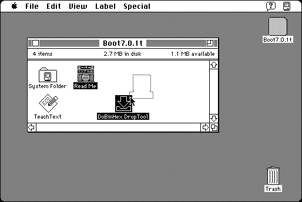

Download
dobinhex-droptool.zip (8K) DoBinHex DropTool 1.0 repackaged into a zipped hfs disk image and checksum file. The disk image can be mounted with Mini vMac.
dobinhex-droptool.bin (12K) DoBinHex DropTool 1.0 in the original format.
copyright: Bill Goodman
mod date: Sep 5, 1996
license: freeware
from url :
Cyclos - DoBinHex DropTool
“For creating BinHexed (HQX) files.” Requires System 7.

If you find these downloads useful, please consider helping the Gryphel Project, which hosts them.
Here are the md5 checksums for the downloads, signed with Gryphel Key 5:
--------- GRY SIGNED TEXT --------- 535779a13a3b2b74f9d278af75b17f4a dobinhex-droptool.zip 2d7a568db20deadd7cc5ea33628a4498 dobinhex-droptool.bin ------- BEGIN GRY SIGNATURE ------- Gry/4Xa8CFcUzxdN/IfJjtZKu0COYUmPu21pYhvf963EFNmS+l2KUMYt8aG1L8oQ guA9Cy5bAtoP81VqWb5Ceqlb6BiLf+afP/E71TBDJJqjPnF+DsBjqHZ2ztWlT0cc WoTM0jG8QuC8mBaC0unb6T/6RwOK1VZ1OgmeejV8nVoJ6y55HdnQrQ46YVrRfryF -------- END GRY SIGNATURE --------